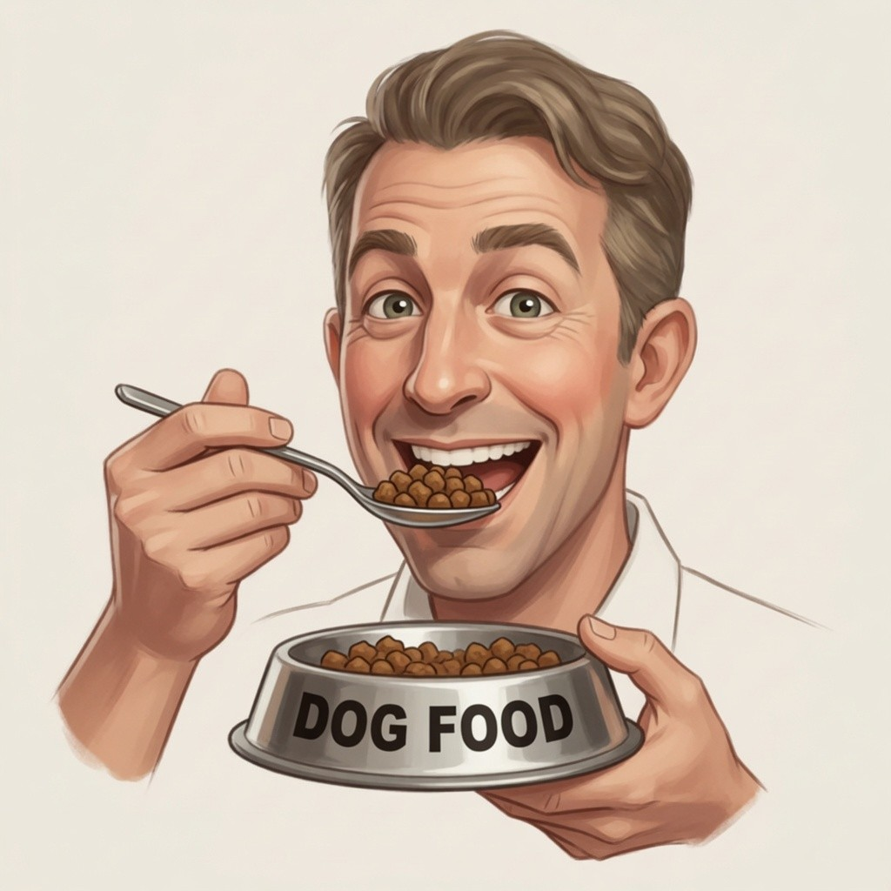

The Damage
Where did all your money go?
Most developers haven't the foggiest what each AI call actually costs them. Scrooge tracks every penny — racking up the savings in no time.


The Frugal Toolkit
Every penny-pinching feature you'll need
From bone-honest cost tracking to silent auto-optimisation — all running on your own machine, where no provider can peek.
Every penny, as it spends
Watch each LLM call ring up in real time. Per-request, per-session, and a running tally in your status bar — nothing hidden.
Free ForeverTrim the fat from every prompt
Redundant tokens snipped before the API ever sees them. Same quality answer, leaner bill at the end of the day.
Never pay twice for the same answer
Ask the same thing again? The cache serves it instantly. No round trip, no token spent. Scrooge approves.
Cheap model when cheap will do
Not every task needs the maestro. ScroogeLLM nudges you toward the smaller model whenever it can carry the tune.
Real names stay home
Deterministic fake names replace real PII before it leaves your machine. Same input, same fake, every time — nothing leaks.
Free ForeverA ledger your CFO will love
Every request logs raw cost vs. actual cost. Inspect it, export it, and use it to justify your tooling budget at the next review.
Free ForeverAPI keys, in the vault
Stored in your operating system's native keychain. Never plaintext, never transmitted. Your keys, your machine, full stop.
Free ForeverFree tier, always on
Visibility, PII protection, and audit logging are free forever. Paid features add deeper savings, but you'll never need to pay to see what you're spending.
Free ForeverHow It Works
A miserly little proxy that earns its keep
Scrooge runs as a quiet local proxy. Your AI tools talk to the Scrooge proxy, which then ships the work out to the most appropriate LLM provider. In between, he pinches every penny he can — and reports back, honest to the cent.
Move in
Install from the VS Code Marketplace. Point your LLM tools at
localhost. That's the whole setup.
Pinch the pennies
Every request flows through. Prompts get trimmed, PII gets scrubbed, and the cache catches what it can. All locally.
Count the loot
See real-time costs in VS Code. Browse your audit trail. Watch the savings pile up, one request at a time.
For the token-counters: how the trimming actually works…
Scrooge doesn’t hack bytes off your prompt and hope. Trimming is tokenizer-aware: the proxy counts with the same byte-pair tokenizer your provider bills against, so the “tokens in vs tokens out” figure in your ledger matches the invoice to the token.
What gets snipped
- Re-sent boilerplate — the system preamble and instructions many tools resend verbatim on every turn. Scrooge recognises the repeat and forwards it once where the provider supports it.
- Dead whitespace and filler — collapsible indentation, duplicated blank lines, and padding that costs tokens but carries no meaning.
- Stale context — chunks already established earlier in the same conversation and re-pasted further down.
What never gets touched
Code fences, string literals, and anything inside them pass through verbatim — a careless trim there would change behaviour, and a frugal miser is not a reckless one. Trimming runs only on the framing around your payload, never the payload itself. Every request logs the before/after token count, so you can audit exactly what was cut and confirm the answer didn’t change.
For the cache nerds: how Scrooge avoids paying twice…
The cache key is not just the prompt text. It is a hash of the
normalised prompt + the exact model id + every sampling parameter
(temperature, top_p, max_tokens, stop sequences).
Change any one of them and it is a different request — you never get a stale
answer that was generated under different settings.
Exact-match, served locally
On a hit, the response comes straight from a per-workspace local store on your own disk — zero round trip, zero tokens, nothing sent to the provider. Streamed responses are replayed chunk-by-chunk, so your editor behaves exactly as if the model had just answered: same typing animation, same cancel behaviour.
When Scrooge declines to cache
High-temperature calls and anything you mark no-store are passed through untouched — caching a deliberately random sample would be a lie, not a saving. TTL is yours to set, and the store is scoped per workspace so one project’s answers never bleed into another’s.
The Routing Trick
Why call the maestro when the cellist will do?
Not every prompt needs the most expensive model in the orchestra. ScroogeLLM conducts the whole ensemble — Haiku here, Sonnet there, Opus only when the music truly demands it. The tip jar fills up either way.

For the routing wonks: how Scrooge picks the cheaper seat…
Before a request is dispatched, a lightweight local scorer sizes it up — no extra LLM call, no extra spend. It reads cheap, observable signals and maps them to the smallest tier likely to carry the tune.
Signals it weighs
- Prompt size and shape — token count and whether the request is a short edit or a sprawling multi-file context.
- Task hints — whether tools / function-calling are requested, whether structured output is required, how long an answer is expected.
- Your own ceilings — a per-task or per-workspace budget you set, above which Scrooge won’t reach for the premium tier without asking.
You stay the conductor
Routing is suggest-and-override, never silent. A model you’ve explicitly pinned is honoured — Scrooge will show you what the cheaper seat would have cost, but it never swaps your choice behind your back.
The saving is measured, not guessed
Every routed request logs which model actually served it and what the premium tier would have billed for the same call. That delta — real model vs counterfactual — is the figure that lands in your status bar. The savings are an arithmetic fact in your ledger, not a marketing estimate.
For Agentic Coding
Let the bots build your empire
Agentic coders spend tokens like Edwardian construction crews spend bricks. ScroogeLLM keeps a careful eye on the worksite, vetoes the wasteful jobs, and reminds the foreman-bot when a smaller crew will do. You sit on the balcony with the cigar.

Privacy & Security
Your secrets stay close to home
ScroogeLLM is built for people who take data seriously. The design goal is simple: the miser keeps the books on your machine, not ours.
The proxy is designed to bind to localhost (127.0.0.1). Any remote exposure would require an explicit opt-in — and a good reason.
API keys go into your OS's native keychain — macOS Keychain, Windows Credential Locker, or Linux Secret Service — rather than plaintext on disk.
No analytics, prompts, or API keys leave your machine by default. If diagnostics ever get added later, they'll be off until you choose to turn them on.
When enabled, real names, emails, and identifiers can be replaced with stable fakes before requests reach your provider. Same input, same fake, every time.
For the privacy geeks, here are the juicy details…
Community Intelligence — the fleet-tuned routing and the “users saved $X” figure — needs aggregate data from many installs to mean anything. It is off by default and gates only those two features; the proxy, cost tracking, and free-tier optimizations never depend on it. When you do opt in, here is exactly what we engineer so the stored dataset is genuinely anonymous, not merely “de-identified”.
No stable identifier — not even a random one
There is no install id, account id, device fingerprint, MAC, or hostname in the payload. We deliberately omit even a random per-install UUID: a stable random id is still a pseudonymous identifier, which would let two rows be linked to the same machine across sessions and would drag the data back under personal-data retention limits. Batches carry at most a non-persisted, unmapped per-batch token that is never stored and never tied back to you.
Numbers and enums only — no field can carry your text
The payload schema has zero free-text fields. It is numeric and enum values: stage timings, token-count buckets, and a feature-flag bitset. There is physically no string field through which a prompt, file path, API key, or code fragment could transit — so none can, even by accident. The ingestion endpoint validates every payload against a strict allow-list and rejects unknown keys outright.
One chokepoint, IP dropped at the edge
Everything flows through a single Cloudflare Worker that is the sole place any
data leaves your machine — one file to audit. It strips
cf-connecting-ip on the way in, so your IP is never recorded. No
exact timestamps are kept; dimensions are bucketed, not
stored at full resolution.
k-anonymity against singling-out
Every row we retain or serve sits inside an aggregate of at least k = 20 within its stratum. Sampling plus that threshold suppress rare combinations — an exotic model paired with a tiny token bucket, say — that could otherwise pick out a single user at low population. This is what defends against singling-out, linkability, and inference, the three re-identification routes anonymisation guidance cares about.
Method grounded in free public guidance — the ICO’s
Anonymisation code of practice and the EDPB/WP29
Opinion 05/2014 on Anonymisation Techniques. We keep a dated,
written self-assessment in the repo and re-review it whenever the schema
changes; indefinite retention holds only while every box on that checklist
still passes. Separately, anything pseudonymous (e.g. /good /
/bad feedback keyed by a hashed id) is not covered by
this and stays storage-limited.
Exhibit A
We eat our own dog food
With a smile, even. Every shipped feature gets tested on its harshest critic first — the developer himself. He dogfoods this proxy every working hour. Which is why our figures aren't just forecasts — they're the savings we've already seen.


Get Early Access
Stop paying full price.
ScroogeLLM is on its way to the VS Code Marketplace. Free tier forever — paid tier saves you more. Old Scrooge insists.